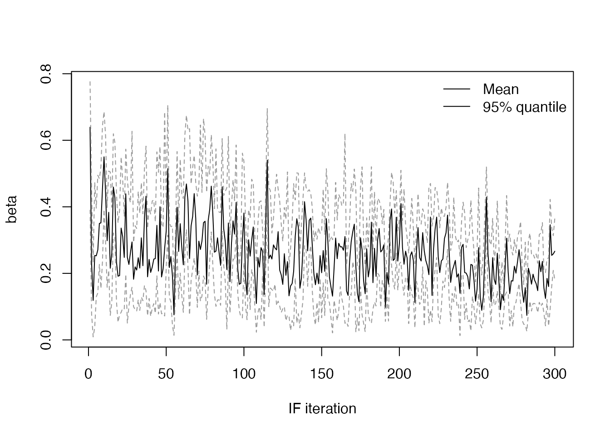

The iterated filtering method, called IF2 in mcstate, is an alternative method to infer the most likely parameters. Instead of conducting an MCMC over particle filter likelihoods, as in the pmcmc methods, the IF2 algorithm proceeds roughly as follows:
- Create a set of \(N\) models, each running a single particle with its own parameter set.
- At each time step, perturb each parameter in each model using Brownian noise.
- Run the models forward, and calculate their log-likelihood.
- Run the particle filter resampling step, swapping model state and parameters.
- At the end of the time-series, recycle the current parameters, reset the model state, and reduce the intensity of the Brownian noise.
- Iterate this procedure until a cooling target for the noise is reached.
Over the course of the iterations, the parameters closer to the data tend to be selected in the resampling step. The noise allows them to vary and approach an optimum. The cooling schedule is similar to simulated annealing, allowing larger steps at the beginning, and finer steps as the optimum is approached.
This algorithm is described in the following paper:
Ionides EL, Nguyen D, Atchadé Y, Stoev S, King AA (2015). “Inference for Dynamic and Latent Variable Models via Iterated, Perturbed Bayes Maps.” PNAS, 112(3), 719–724. https://doi.org/10.1073/pnas.1410597112.
Setting up an IF2 run
Based on the example in vignette("sir_models"), we will start by loading an SIR model and some simulated data. See that vignette for more details on what is being done here
A data set to fit to
incidence <- read.csv(system.file("sir_incidence.csv", package = "mcstate"))
plot(cases ~ day, incidence,
type = "o", xlab = "Day", ylab = "New cases", pch = 19)
data <- mcstate::particle_filter_data(incidence, time = "day", rate = 4)A dust model generator object
sir <- dust::dust_example("sir")A comparison function
compare <- function(state, observed, pars = NULL) {
if (is.na(observed$cases)) {
return(NULL)
}
exp_noise <- 1e6
incidence_modelled <- state[1, , drop = TRUE]
incidence_observed <- observed$cases
lambda <- incidence_modelled +
rexp(n = length(incidence_modelled), rate = exp_noise)
dpois(x = incidence_observed, lambda = lambda, log = TRUE)
}An index function for filtering the run state
index <- function(info) {
list(run = 5L, state = 1:3)
}The differences for the IF2 method start here! We now need to specify the initial values and the search range for the two parameters \(\beta\) and \(\gamma\):
pars <- mcstate::if2_parameters$new(
list(mcstate::if2_parameter("beta", 0.5, min = 0, max = 1),
mcstate::if2_parameter("gamma", 0.01, min = 0, max = 1)))For this example, we start far away from the true values of \(\beta = 0.2\) and \(\gamma = 0.1\).
The IF2 algorithm needs a number of parameter sets to perturb, the magnitude of the noise with which to perturb them, the amount to reduce the perturbations by, and the number of iterations of which to perform this reduction in magnitude. As with our mcstate::pmcmc method, we organise these parameters into a single control object:
control <- mcstate::if2_control(
pars_sd = list("beta" = 0.02, "gamma" = 0.02),
iterations = 100,
n_par_sets = 300,
cooling_target = 0.5,
progress = TRUE)Here we will iterate 300 parameter sets with X ~ N(0, 0.02), with geometrically decreasing noise, until after 100 iterations the magnitude of the noise has halved.
Running the IF2 algorithm
To start the IF2, we use a particle filter object in order to do some validation against the data. This may change in future and the particle filter is not actually run at this point in the process
filter <- mcstate::particle_filter$new(data, sir, 1L, compare, index = index)Then, call mcstate::if2, which will take a while to run
res <- mcstate::if2(pars, filter, control)
#> Finished 100 steps in 2 minsWe can plot the likelihood over the course of the iterations
plot(res$result$log_likelihood, main = "LL profile",
xlab = "IF iteration", ylab = "Log likelihood", type = "l")
and the values of \(\beta\) and \(\gamma\) (using a small helper function)
plot_if2_parameter <- function(name, obj) {
pars <- obj$result$pars
quantiles <- apply(pars[name, , ], 2, quantile, c(0.025, 0.975))
plot(apply(pars[name, , ], 2, mean), type = "l", lwd = 1, col = "#000000",
xlab = "IF iteration", ylab = name, ylim = range(quantiles))
matlines(t(quantiles), type = "l", lty = 2, lwd = 1, col = "#999999")
legend("bottomright", lwd = 1, legend = c("Mean", "95% quantile"), bty = "n")
}
plot_if2_parameter("beta", res)
plot_if2_parameter("gamma", res)
Checking the mean values of each parameter at the final iteration, they are close to their true values:
pars_series <- res$result$pars
rowMeans(pars_series[, , dim(pars_series)[[3]]])
#> beta gamma
#> 0.20846134 0.04508493We can also run particle filters at each final parameter estimate to get an estimate of the model likelihood, showing the mean value in red:
n_particles <- 100
ll_samples <- mcstate::if2_sample(res, n_particles)
#> Finished 300 steps in 6 secs
hist(ll_samples, col = "steelblue3")
abline(v = mean(ll_samples), col = "red", lty = 2, lwd = 2)